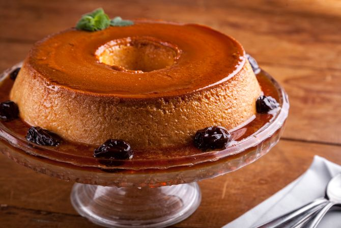

Projeto Gourmet
O seu blog de Culinaria
Receita de Pudim
postado 20 de março 2023 Ingredientes
- 1 lata de leite condensado
- 6 unidades de Ovo
- 1 litro de leite
- 1/2 colher de sopa de amido de milho
- 5 colheres de sopa de açúcar
Modo de preparo
Numa frigideira derreta o açúcar até formar uma calda e utilize-a para untar a forma do pudim. Bata o restante...
Leia maisReceita de Bolo de Cenoura
postado 3 de Fevereiro 2023
Ingredientes
- 1 xícara de cenoura lavada, descascada e cortada em cubinhos
- 2 ovos
- ½ xícara de açúcar
- 2 colheres de sopa de manteiga
- 1 xícara de farinha de trigo
- 1 colher de chá de fermento em pó
- 1/3 xícara de calda de chocolate
Modo de preparo
Coloque no Liquidificador a cenoura, os ovos e a manteiga e bata por cerca de 5 minutos, até ter uma massa homogênea;
Transfira essa massa para uma tigela e vá adicionando aos poucos a farinha, depois o fermento;
Misture tudo até a massa ficar bem lisa.
Use uma forma que caiba na sua Air Fyer.
Unte a forma com manteiga e polvilhe farinha de...